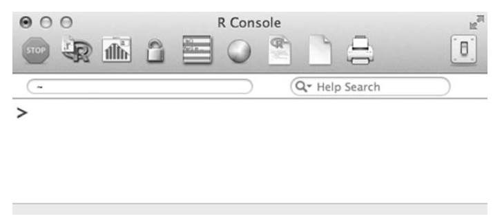
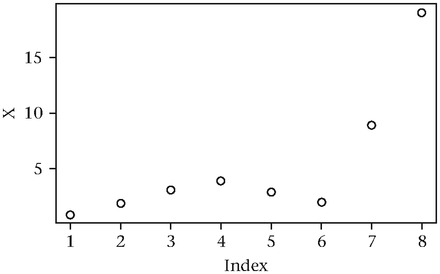
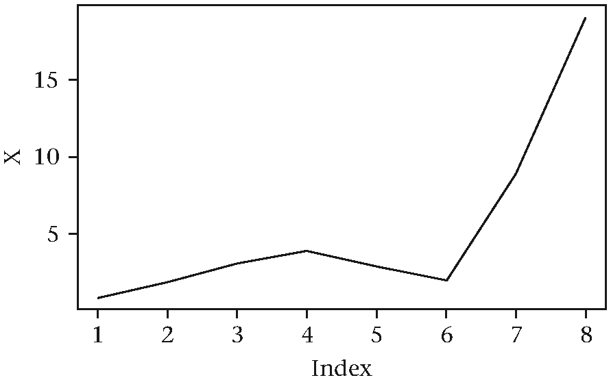
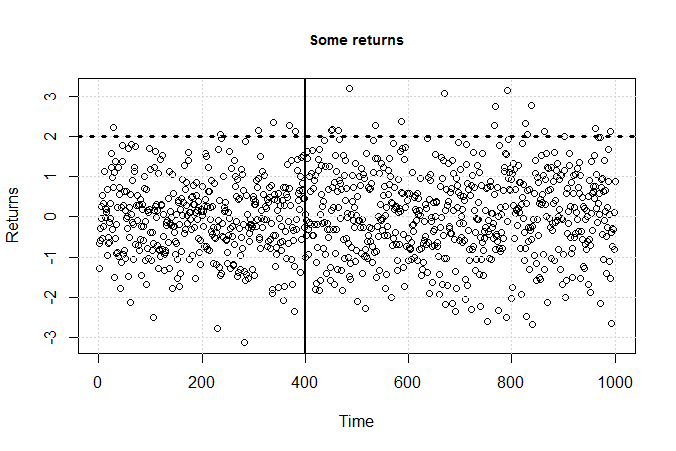
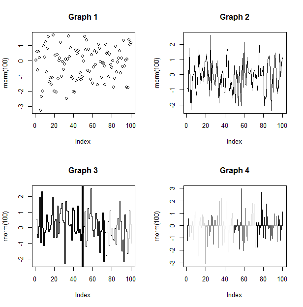
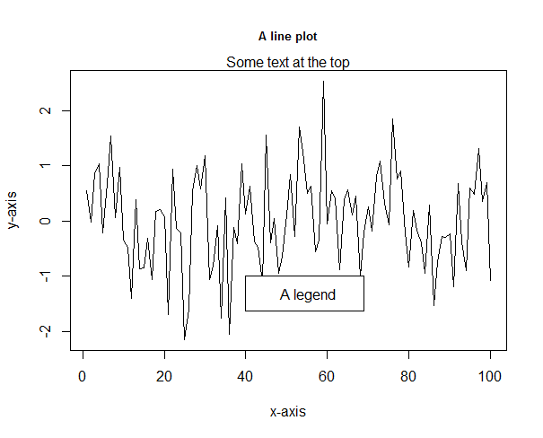
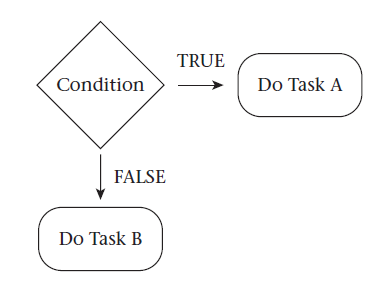
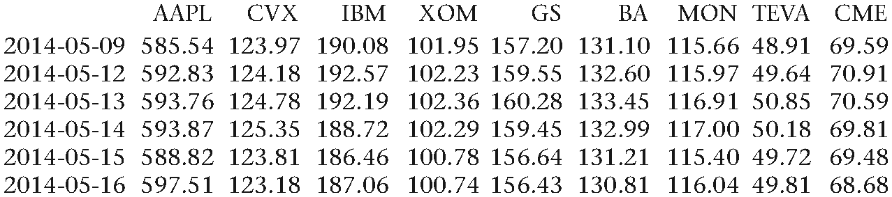
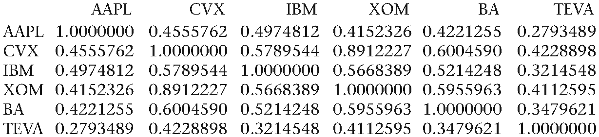
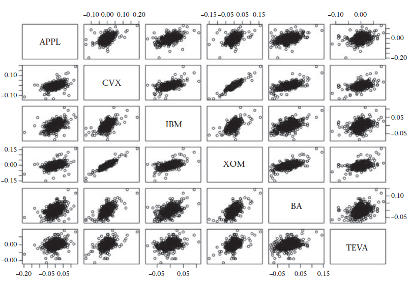

第2章 交易工具
宽客和交易员执行日常工作的主要工具包括直觉、数据、计算机硬件、计算机软件、数学与金融。他们以巧妙的方式利用这些工具达在金融市场上获得利润的目的。许多交易员依靠直觉获益良多，但只依靠直觉，一般不可能成果卓越。他们为了最大限度地提高获利概率，需要掌握各种各样的工具。编程语言就是其中一个工具。在本书中，我们将了解如何使用R编程语言来处理数据、进行数学运算、自动化工作流程、展示可视信息、创建可重复研究以及很多其他很酷的事情。
R语言
R语言[88]是一门开源的脚本语言，多年来已成为广受统计人员、数据科学从业者以及学者欢迎的工具。它本质上是一门函数式编程语言，但也支持面向对象式的编程范式和命令式的编程范式。在某种意义上，R既是一门编程语言也是一种开发框架。该框架支持一些先进的绘图功能，提供多种前沿的统计软件包。R语言本身支持条件语句、循环、函数、类，以及大多数VBA和C++用户熟悉的功能。R的核心优势在于拥有大量第三方贡献的扩展包、坚实的用户基础和强大的开源社区。R系统可分为两个部分：
从CRAN下载的R基础安装包
其他扩展包
R基础安装包含运行R软件的基本代码。许多有用的函数和库也是这个基础包的一部分。其中包括：utils，stats，datasets，graphics，grDevices，以及methods.
R是S语言的分支。S 语言由贝尔实验室的John Chambers、 Rick Becker和Allan Wilks开发于 20世纪70年代末。它始于一堆Fortran开发库，起初用于贝尔实验室内部的统计分析。截止1988年，系统开发大部分开始使用 C语言，1998年第4版S语言语言发布。Insightful公司在1993年被授予独家许可，使其可以使用S语言投入商业性质的软件产品开发。1991年Ross Ihaka 和 Robert Gentleman在奥克兰大学发明了R语言。据传说，R之为R，是对S的一个玩笑（译者注：R在字母表中位于S之前），但事实是真实的原因可能是因为Ross 和Robert二位名字的首字母都为R。R在1993年首次公开亮相，1995年通过公共许可证（GNU）成为免费软件[96]。R核心团队（R Core Group）成立于1997年。团队目前控制R语言源代码并负责主要软件版本的开发。R的第一个版本（R版本1.0.0）发布于2000年。R 3.0版本在2013年四月发布，该版本加入来多项改进，其中包括对长向量的支持。
R软件是免费的，且有成千上万的统计和分析包可供下载，在量化金融和学术领域非常热门，常用于快速构建某些想法的程序原型，也是本书作者经验最多的编程语言。理论上讲，我们可以使用任何图灵完备的编程语言来达成编程目标。当然，其中一些编程语言可能比另一些更容易学习和应用。
下面例子展示了"Hello World!"在不同编程语言中的实现，摘自维基百科[124]：
Assembly x86-64 Linux:
.section .rodata
string:
.ascii "Hello, world!\n"
length:
.quad . -string
.section .text
.globl _start
_start:
movq $4, %rax
movq $1, %rbx
movq $string, %rcx
movq length, %rdx
int $0x80
movq %rax, %rbx
movq $1, %rax
int $0x80Brainfuck:
++++++++++[>+++++++>
++++++++++>+++>+>+++
+<<<<<-]> ++.>+.+++++++
..+++.>>>++++.<<++.<+++
+++++.--------.+++.------.-----
---.>+.>.C++:
#include <iostream>
int main()
{
std::cout << "Hello, world!" << std::endl;
return 0;
}Julia:
println("Hello, world!")Swift:
println("Hello, world!")Python 2:
print "Hello, world!"R:
cat("Hello, world!\n")理想的情况下，我们需要一门编程语言，能够快速对一个想法进行原型开发，提供即时反馈给程序员（直译而非编译式），能够高效地创建简单或复杂的图表图形，通过第三方接入更多功能，具有平台（可用于Windows、Mac和Linux）兼容性，获取和操作数据方法相对简单易用，可扩展（自定义函数可用R，或者C、FORTRAN甚至C++编写），速度快，并且免费。
相当多的计算框架满足大多数以上要求，但是没有哪种语言满足所有这些要求。定量金融领域中最常用的语言包括（在没有特定的顺序）：Python, R, Matlab, Julia,4 C++, C#, Java, 和VBA.。一般而言，Python、Julia、Matlab、VBA 和R用作原型开发或研究性质的语言，而C++、C#和java往往更多被用于应用和设施开发。

图2.1 控制台（R Console）
R入门
下面说明如何在Windows或 Mac 机器上安装 R程序。
导航到以下网站︰ http://www.r-project.org/，在"入门"部分中单击下载R，或者点击在左侧菜单中的"CRAN"链接。
选择最接近的镜像站点。
基于Linux、 Mac、 或者Windows系统，选择适当的基础软件包。
选择选择安装的所有默认选项。安装后是完成，点击生成的 R 图标以启动控制台。
图2.1 说明了R控制台在 Mac 计算机上的样子。有至少三种方式可以在R中输入命令:
- 通过直接在控制台键入表达式
- 通过复制代码曼打开文本文件并将该代码粘贴到R 控制台
- 通过 source() 命令从外部文件代码
接下来的几个例子演示的R基本功能部分。推荐下面的流程：在一个文本文件中输入命令，然后将它们复制到 R 控制台，以便重复或修订语句。History() 函数帮助回溯以前输入的命令。键入以下命令到 R 将返回最后四个命令︰ history(4)。若要获取一个会话的整个历史，我们可以使用history(Inf) 声明。
首先，R可以用作一个科学计算器。所有常用数学操作可直接进入并在控制台中进行评估。操作如加、减、乘、除和求幂符号引用由已知的符号 (+，-，*，/，^)。R中基本的构造元素是数字、字符串和布尔值。 数字是熟悉符号 1，2，3，1e +06、3.1415，等等。字符串是字符序列为0或更多的符号由要么封装单引号或双引号。如下例所示:
"1"
" "
""
"this is a string"
'Hello'
'2 + 4'
布尔型变量的计算结果为一个TRUE或FALSE陈述。在 R，以下计算结果为 TRUE: 1 + 2 == 3。注意使用双等于号。单等于号为赋值操作。下面的 R 表达式将会产生一个错误︰ 1 + 2 = 3。在 R中经常出现的几个其他符号程序是开放和封闭的圆括号 （），打开和关闭的大括号{}，打开和关闭的方括号 [] 和赋值运算符 <-。
下面是一些示例表达式将返回数值的答案︰
1 + 1
## [1] 2
sqrt(2)
## [1] 1.414214
20 + (26.8 * 23.4) / 2 + exp(1.34) * cos(1)
## [1] 335.6234
sin(1)
## [1] 0.841471
5^4
## [1] 625
sqrt(-1 + 0i)
## [1] 0+1iR也可以进行高级的数学运算。下面的代码块创建了一个叫作integrand() 的函数，并调用R预先定义的函数integrate()。在R中编写自定义函数的内容 将在后面的章节中详细介绍。此示例是要表明，通过调用预封装的函数，R 能够轻松完成高级的数值算法︰
integrand <- function(x) 1 / ((x + 1) * sqrt(x))
integrate(integrand, lower = 0, upper = Inf)
## 3.141593 with absolute error < 2.7e-05用上面的代码计算积分︰ (2.1)
符号<-将一个值赋予某个变量:
x <- 3
x <- x + 1
z <- x ^ 2
z <- "hello quants"
y <- "a"
Z <- sqrt(2)
new.X <- 2.3在前面的例子中，有以下几点需要注意:
在R里，表达式是区分大小写的。变量 z 与Z不相同，变量名称不允许使用特殊字符和空格。“.”运算符是一个例外，以.开头的变量名字是允许的（即一个变量名字.myVar）。变量名称不是允许以数字字符开头。
不需要像在其他语言中事先声明变量类型为整型、浮点型或字符串等，程序运行时R会自动分辨变量类型。
变量可以被复制
- z <- x ^ 2例子中，x的值并不会真的被改变，x的平方，作为运算结果，被赋值给另一个变量z 其他语言使用 = 运算符来表示赋值，而R能够同时支持=和<-。出于一致性的考虑，本书使用<-。
输入5 + 4 将得到返回值为9。9前的[1]表示其是向量的第一个元素。我们将在行首使用两个##号来标记一段代码的输出结果，用单个#号标记代码中的注释。这只是本书的一个惯用做法。实际上，两者都可以作为有效的注释符号来使用。
5 + 4
## [1] 9数字之间的空白格和+号不会影响输出，也不产生任何警告。表达式5 +4仍然产生9。当R不能将某条命令解析成有意义的代码时，其会返回警告和错误信息。例如，如果一个人忘记5和4之间的+号，程序将发出以下错误提示︰ Error: unexpected numeric constant in "5 4"。
在进行任何数据分析的实际工作之前，数据必须存储在一个合适的对象内。R中重要的数据对象包括：
向量
矩阵
数据框
列
环境
数据放在这种数据结构里面之后，我们可以对其进行多种数据操作。
c()对象
向量可以看作是一个一维数组。每个向量只能包含同一类型元素的数据。也就是说，只有纯数字，纯字符或纯布尔值的元素才可以放到同一个向量里。下面的示例创建了三个分属于数值类型和字符类型的向量︰
first_vector <- c(1, 2, 3, 4, 5, 6)
second_vector <- c("a", "b", "hello")
third_vector <- c("a", 2, 23)c()用于连接数字,字符,或布尔值，第三个例子中的元素包含来数字与字符串儿。此时，R程序将把数字转换成字符串。在R控制台输入变量名将显示新创建的向量的内容:
first_vector
## [1] 1 2 3 4 5 6
third_vector
## [1] "a" "2" "23"c()也可以将已经存在的向量转化成更长的向量。
new_vector <- c(first_vector, 7, 8, 9)
new_vector
## [1] 1 2 3 4 5 6 7 8 9从向量中提取元素可以通过[]来完成。
下面的例子演示了可以对向量进行的各种操作。当我们开始讨论提取元素时，索引的概念就变得很重要(即R语言中，一个向量的第一个元素的被标记为1)，这与其他语言(c++、Java、Python)中第一个元素被标记为0不同。 第一个示例演示提取一个元素。第二个示例演示提取两个元素。注意，c()创建的是一个有序向量。其中，序号可以用来从向量中提取元素。这种提取向量元素的方法非常重要，后面将反复用到：
# 提取第四个元素
example_1 <- new_vector[4]
# 提取第五个和第八个元素
example_2 <- new_vector[c(5, 8)]
example_2
## [1] 5 8下面的例子用以说明另一个重要的概念——向量化（vectorization）操作。不同于一次操作一个元素，向量化操作可以同时对向量的所有元素执行操作。从概念上讲，我们可以把一个数值型向量当成单一数值来看。一些基本的例子如下：
x <- c(1, 5, 10, 15, 20)
## [1] 1 5 10 15 20
x2 <- 2 * x
## [1] 2 10 20 30 40
x3 <- x ^ 2
## [1] 1 25 100 225 400
x4 <- x / x2
## [1] 0.5 0.5 0.5 0.5 0.5
x5 <- round(x * (x / x2) ^ 3.5 + sqrt(x4), 3)
## [1] 0.795 1.149 1.591 2.033 2.475
x6 <- round(c(c(x2[2:4], x3[1:2]), x5[4]), 2)
## [1] 10.00 20.00 30.00 1.00 25.00 2.03向量化使我们能够用一次性操作替代一次次的重复操作。
如果我们只是想对向量中第四和第六元素执行操作，我们将不得不从向量中提取所需要的数据(y < - x[4]+[6])。最后一个例子，结合了一些前面所讨论的内容。在这个例子中，我们从向量中提取特定元素x2、x3和x5，然后连接成一个新的向量，同时将操作的结果保留2位小数。
matrix()对象
矩阵可以看作是两个维度的向量，当然，矩阵包含的元素须是同一类型的。接下来的例子定义了一个两行三列的矩阵。在R语言中，矩阵被保存为纵列形式。
my_matrix <- matrix(c(1, 2, 3, 4, 5, 6),
nrow = 2, ncol = 3)
my_matrix
## [,1] [,2] [,3]
## [1,] 1 3 5
## [2,] 2 4 6matrix()命令默认输入的数据以纵列形式排列。为了让数据按行排列，我们需要将之前的例子略作修改。
my_matrix <- matrix(c(1, 2, 3, 4, 5, 6),
nrow = 2, ncol = 3, byrow = TRUE)
my_matrix
## [,1] [,2] [,3]
## [1,] 1 2 3
## [2,] 4 5 6矩阵是一个对象。而对象都拥有属性特征。属性定义了对象的额外信息。矩阵的一个有用属性是行和列的名称向量。 它们可以封装成一个list对象，并作为参数传入dimnames()函数：
dimnames(my_matrix) <- list(c("one", "hello"),
c("column1", "column2", "c3"))
my_matrix
## column1 column2 c3
## one 1 2 3
## hello 4 5 6我们可以查询对象的属性:
attributes(my_matrix)
## $dim
## [1] 2 3
## $dimnames
## $dimnames[[1]]
## [1] "one" "hello"
## $dimnames[[2]]
## [1] "column1" "column2" "c3"由结果可知，该矩阵为两行三列矩阵，此外，结果还包括了行和列的名字。 从一个矩阵中提取数据可以通过使用[,]来完成。提取元素位于第1行和第3列时，我们可以运行以下命令：
ans <- my_matrix[1, 3]
ans
## [1] 3
# 矩阵也适用向量化运算。
new_matrix_1 <- my_matrix * my_matrix
new_matrix_1
## [,1] [,2] [,3]
## [1,] 1 4 9
## [2,] 16 25 36
new_matrix_2 <- sqrt(my_matrix)
new_matrix_2
## [,1] [,2] [,3]
## [1,] 1 1.414214 1.732051
## [2,] 2 2.236068 2.449490这里有些例子，利用向量化和单一元素进行操作：
mat1 <- matrix(rnorm(1000), nrow = 100)
round(mat1[1:5, 2:6], 3)
## [,1] [,2] [,3] [,4] [,5]
## [1,] -1.544 1.281 1.397 0.407 -0.459
## [2,] 0.483 0.046 -1.817 -0.289 0.597
## [3,] 0.405 1.045 -0.726 -0.163 0.258
## [4,] 0.141 -0.294 -1.225 -0.217 -0.771
## [5,] -0.537 0.226 0.126 -1.584 -1.237
mat2 <- mat1[1:25, ] ^ 2
head(round(mat2, 0), 9)[,1:7]
## [,1] [,2] [,3] [,4] [,5] [,6] [,7]
## [1,] 1 2 2 2 0 0 7
## [2,] 0 0 0 3 0 0 0
## [3,] 0 0 1 1 0 0 1
## [4,] 0 0 0 2 0 1 4
## [5,] 1 0 0 0 3 2 1
## [6,] 2 1 3 1 1 1 1
## [7,] 0 0 0 0 0 1 0
## [8,] 1 2 0 0 1 2 0
## [9,] 0 0 3 0 2 2 0data.frame()对象
可以把数据框data.frame()简单地想象成一张表格。作为二维数据对象，它可容纳数值、字符、布尔和因子型数据。每当R从外部环境读取数据时，读入结果很可能是一个数据框，其类似如下代码创建的结构:
df <- data.frame(price = c(89.2, 23.2, 21.2),
symbol = c("MOT", "AAPL", "IBM"),
action = c("Buy", "Sell", "Buy"))
df
## price symbol action
## 1 89.2 MOT Buy
## 2 23.2 AAPL Sell
## 3 21.2 IBM Buy数据框的每个参数对应一列数据，不同的列有各自的名称。在数据框里，与矩阵类似，须确保所有列对应一致的行数。数据框里的数据要保持长方形格式，否则R将返回一条错误提示。
因子是一个方便应用的数据类型，其常用于对数据进行分类和分析。鉴于我们后续的分析并不需要这种结构， 为了防止字符型向量转化为因子型向量，这里可以使用data.frame()命令中的 stringsAsFactors = FALSE参数来加以控制：
df3 <-data.frame(price = c(89.2, 23.2, 21.2),
symbol = c("MOT", "AAPL", "IBM"),
action = c("Buy", "Sell", "Buy"),
stringsAsFactors = FALSE)
class(df3$symbol)
## [1] "character"之前例子中的一些重点内容如下：
函数可以有多个输入参数。函数名字前面加“？”可以查看某个函数需要传入哪些参数，比如 ? data.frame。
对象可以直接传入其他函数。函数也是对象。事实上，R里面一切都是对象!
数据框也可以通过[, ]运算符来进行索引：
price <- df[1, 1]
price
## [1] 89.2
df2 <- data.frame(col1 = c(1, 2, 3),
col2 = c(1, 2, 3, 4))
## Error in data.frame(col1 = c(1,2,3),
## col2 = c(1,2,3,4)) : arguments imply
## differing number of rows: 3, 4美元符号 $ 作为运算符，可以通过列名来提取数据列:
symbols <- df$symbol
symbols
## [1] MOT AAPL IBM
## Levels: AAPL IBM MOT列名字对应的“水平”（levels）意味着变量的类型是一个“因子”:
class(symbols)
## [1] "factor"然而，df3数据框的symbols列为一个字符型向量。
symbols <- df3$symbol
symbols
## [1] "MOT" "AAPL" "IBM"list()对象
对R用户而言，列表list对象是非常有用的数据结构之一。它是最广义的对象之一，因为它能存储各种类型和大小的对象。下面的代码创建一个list并填充入三个独立对象：
my_list <- list(a = c(1, 2, 3, 4, 5),
b = matrix(1:10, nrow = 2, ncol = 5),
c = data.frame(price = c(89.3, 98.2, 21.2),
stock = c("MOT", "IBM", "CSCO")))
my_list
## $a
## [1] 1 2 3 4 5
## $b
## [,1] [,2] [,3] [,4] [,5]
## [1,] 1 3 5 7 9
## [2,] 2 4 6 8 10
## $c
## price stock
## 1 89.3 MOT
## 2 98.2 IBM
## 3 21.2 CSCOmy_list第一个对象是a，它是一个包含5个元素的数值型向量。第二个元素是一个矩阵，第三个元素是一个数据框。很多R函数利用list的广义数据容器特性来保存计算结果。
list可以被索引，方法是将一个数值（list元素的索引）或元素名字传入双括号[[ ]]。
first_element <- my_list[[1]]
first_element
## [1] 1 2 3 4 5
class(first_element)
## [1] "numeric"另一种提取方法如下：
second_element <- my_list[["b"]]
second_element
## [,1] [,2] [,3] [,4] [,5]
## [1,] 1 3 5 7 9
## [2,] 2 4 6 8 10
class(second_element)
## [1] "matrix"单括号[]用来提取list的一部分。初学者在这里常常会有困惑。这里需要提醒一下，[[]]返回的是list的元素，而[ ]返回的仍是list。比如：
part_of_list <- my_list[c(1, 3)]
part_of_list
## $a
## [1] 1 2 3 4 5
## $c
## price stock
## 1 89.3 MOT
## 2 98.2 IBM
## 3 21.2 CSCO
class(part_of_list)
## [1] "list"list的长度可以用length()函数来获得。
size_of_list <- length(my_list)
size_of_list
## [1] 3new.env()对象
环境（environment）是一个功能强大的数据结构，其由于性能良好常被应用于底层。不同于其他结构，它有引用语义（reference semantics）5的特性。它与list对象最为类似，且可以引用上层母环境。environment通常使用O(1)查找性能来模拟哈希映射。如果想更深入地了解引用语义以及此类数据结构的信息，请移步http://adv-r.had.co.nz/Environments.html。
用new.env()命令创建一个新的environment:
env <- new.env()
env[["first"]] <- 5
env[["second"]] <- 6
env$third <- 7于list对象类似，名称-值可以通过$或[[ ]]进行赋予。两者的差异在于，输入env到控制台并没有获得我们习惯看到的名字或数值：
env
## <environment: 0x101ef2f18>而是得到了一个神秘的十六进制代码。为了获得对象的名称，必须使用ls命令:
ls(env)
## [1] "first" "second" "third"我们可以使用get命令来获取相关取值:
get("first", envir = env)
## 5从一个environment中删除元素可以通过rm()命令来完成:
rm("second", envir = env)
ls(env)
## [1] "first" "third"在列表、数据框、矩阵和向量中提到的复制和修改规则并不适用于environment对象。由于引用语义的特性存在，当我们创建一个environment的副本，修改它的一个元素时，原始对象的元素也将被修改。比如:
env_2 <- env
env_2$third <- 42
get("third", envir = env)
## [1] 42使用plot()函数
R编程语言的优点之一在于其丰富的绘图功能。最先进的图形函数由ggplot2、ggvis、rCharts和rgl等扩展包提供，CRAN7上的图形任务视图（graphics task view）包含一系列绘图相关的扩展包。本书后续的工作将继续使用plot()命令，它对于满足我们的画图需求绰绰有余。 下面是plot()默认的输出示例:
# 创建一个向量，并绘制图形
x <- c(1, 2, 3.2, 4, 3, 2.1, 9, 19)
plot(x) 调整type参数可以把点图转换为线图:
# 转换为线图
plot(x, type = "l")
图2.2 默认的向量图

图2.3 线型向量图
?plot可以看到更多有用的画图类型：
- p表示点
- l表示线
- b表示二者
- c表示b中只保留线图
- o表示b中点线重叠
- h表示直方图（或高密度图）的垂直线
- s表示梯状图
- S表示其他梯状
- n表示不画图
将plot想象成一块画布有助于理解函数的画图机制。大概过程是，先用plot()创建一个空白的画布，再把线条和文本通过调用其他函数展现在画布上。下面的例子演示了用plot创建一个含有主标题，坐标轴和基本网格的图的过程。最后绘制一条垂直线和一条水平线上去。
# 设置画布
plot(rnorm(1000), main = "Some returns", cex.main = 0.9,
xlab = "Time", ylab = "Returns")
# 添加网格线
grid()
# 绘制横线和竖线
abline(v = 400, lwd = 2, lty = 1)
abline(h = 2, lwd = 3, lty = 3)
图2.4 含有额外要素的图
关于abline()中v、h、lwd、lty和其他参数的用法，可以调用? abline查询完整信息。其中，lwd参数定义线宽，lty参数定义线型。
par()命令用于查询或设定全局图形参数，这些参数在随后所有plot()函数的绘图过程中调用。下面的代码将窗口分为两行两列的长方形子窗口。plot()命令可以在每个子窗口使用。线条和文本也可以被添加到每个子图中:
# 创建两行两列的画图窗口
par(mfrow = c(2, 2))
# 绘制散点图
plot(rnorm(100), main = "Graph 1")
# 绘制折线图
plot(rnorm(100), main = "Graph 2", type = "l")
# 绘制阶梯图
plot(rnorm(100), main = "Graph 3", type = "s")
abline(v = 50, lwd = 4)
# 绘制火柴棒图
plot(rnorm(100), type = "h", main = "Graph 4")
# 重置绘画窗口
par(mfrow = c(1, 1))
图2.5 四幅图并列于画板上
只要有适当的名称，参数按照什么顺序传递给函数是没有差别的。在底层，R顺序使用名字匹配和位置匹配来完成参数赋值。调用plot(x, main = "Hello", type = "h")和调用plot(x, type = "h", main = "Hello")的效果是相同的。
下面展示如何在图上添加文字和图例：
plot(rnorm(100), main = "A line plot",
cex.main = 0.8,
xlab = "x-axis",
ylab = "y-axis",
type = "l")
# 添加文字
mtext("Some text at the top", side = 3)
# x = 40和y = -1 处添加图例
legend(40, -1, "A legend")
图2.6 带图例和文字的图
plot()有很多设定，在控制台输入？plot.default会看到更多具体内容。另外，formals()函数也可以用来提取函数的参数:
formals(plot.default)
## $x
## $y
## NULL
## $type
## [1] "p"
## ...函数式编程
函数式编程是R程序员常用的一种编程风格。在函数式编程范式中，主角是函数自身。区分函数式编程和其他编程范式(比如命令式编程)的地方在于是否具有状态不变性（nonmutability of state）[85] 。在函数式编程范式下，结果完全由输入值和函数决定。这一过程不影响函数之外的其他任何东西。只要给定相同的输入值，程序跑出的结果就完全一致。函数式编程的思想蕴含着坚实的数学理论。R本身并不遵循严格的函数式编程框架，实践中的R程序往往是命令式编程、面向对象编程以及函数式编程融合的产物。
如何加总1到100之间所有的数？下面是向量化和函数式编程的思路︰
ans <- sum(1:100)
ans
## [1] 5050函数式编程有助于抽象掉很多不必要的细节。例如，如果我们想要加总一列向量的数字，其中，x为向量，直接使用sum(x命令是最直观的。这种做法不需要在向量上执行循环操作，将每个元素的值分配给一个临时变量，跟踪求和，管理分支、for或者while循环。当然，内部仍然有for循环和命令式编程在工作。这只是抽象功能的基本内容。在R里，这些对应的抽象操作通常是由底层语言诸如 C、 c + + 或 Fortran 来实现。
answer <- 0
for(i in 1:100) {
answer <- answer + i
}
answer
## [1] 5050R里面几乎所有的运行都可以被向量化，并以一种函数式的编程范式来实现。这就使得代码更快（大部分情况下）、更简洁、更不容易出错。
编写R函数
编程就像烘焙蛋糕。准备好用料（数据和参数），再根据食谱做出最终产品。数据常常通过实时网络连接或数据库查询等方式得到，食谱（程序）提供必要的操作指示以将数据转换和结合成最终结果。简单来看，可以把一个程序想象成一连串指令。拿做蛋糕作比喻，程序的上层伪代码（pseudocode）差不多是这样子：
从冰箱取出所有鸡蛋，摆上案板
吸气，集中意念，右手落于鸡蛋上方
呼气，抓住一个鸡蛋，手指分开
放手，手指呈钳住状
抬手臂，身体顺时针转60度
爆发式地上下移动右手臂，触碰碗的边缘。
到这一步我们才刚刚打了一个鸡蛋！可以想象，同样的动作持续一遍又一遍，就不那么有趣了，更不用说其他原料了。摆脱这种痛苦的一种方式是抽象掉或者封装掉一些重复性的操作。这就是函数做的事情。可以想象函数是一个个小黑箱，对小黑箱输入或不输入任何东西，小黑箱会输出一个、一些结果或者啥也不输出。我们可以建立一个以手边鸡蛋个数为参数的函数，返回一个TRUE/FALSE的真假逻辑判断值来表示鸡蛋是否被成功磕碎。
函数申明帮助定义用户和函数逻辑之间的界面。C++中一个申明的例子会是这样：bool CrackEggs(int)。 这意味着函数CrackEggs()需要输入一个整型数值，且会输出一个布尔值。R并不要求必须申明输入值或输出值的类型，其会在运行的时候推断输入的是什么类型。在R中，代码CrackEggs(4)和CrackEggs(“wow")都可以正常工作。第一个例子中，R知道函数的输入值必须是一个数值，第二个例子中则必须是一个字符型向量。但我们需要告诉RCrackEggs()是一个函数，其有一个输入值，且将返回一个布尔值。function()的参数用作这一目的：
crack_eggs <- function(number_of_eggs) {
# 这是一段判断鸡蛋是否磕碎的代码
# 如果鸡蛋被磕碎了，设定have_all_eggs_been_cracked为TRUE,
# 否则，为FALSE
return(have_all_eggs_been_cracked)
}现在，我们的食谱看起来像这样︰
gather ingredients()
crack eggs()
add ingredients()
bake cake()
简而言之，这就是抽象9的工作原理。在本书中，我们首先写出能够应对特定任务的短小函数，然后将这些函数分组，创建更复杂的程序，以得到我们想要的最终结果。
基础R安装包有许多预定义的函数。不幸地是，新手很难找到使用这些函数的详细信息。这也是R被认为起始学习曲线陡峭的原因之一。基础版本的R文档缺乏严格性，且示例和推荐用法过于简短。即便如此，关于R语言，无论是网络资源还是印刷品都有着非常丰富的教程。本书最后的参考文献10应该可以给读者有益的参考。下面例子包含一些值得记忆的函数：
# 生成100个随机数
x <- rnorm(100, mean = 0, sd = 1)
# 返回向量的长度
length(x)
# 计算均值
mean(x)
# 计算标准差
sd(x)
# 计算中位数
median(x)
# 返回向量的最大值和最小值
range(x)
# 对向量求和
sum(x)
# 对向量累计求和
cumsum(x)
# 提取向量的前3个元素
head(x, 3)
# 计算向量x的描述性统计量
summary(x)
# 对x升序排序
sort(x, decreasing = TRUE)
# 计算向量x的差分序列
diff(x)
# 创建1-10的整数序列
1:10
# 创建起始值为1，终值为10，步长为0.1的序列
seq(1, 10, 0.1)
# 输出字符串“hello”
print("hello")
图2.7 陈述句流程图
分支和循环
在我们愉快地玩耍之前，简单看一下if()和for()命令。他们的工作原理和其他语言类似。if()命令作为一个分支机制，根据对布尔表达式的评估指导程序的走向。
下面的示例会在屏幕上打印“XYZ”因为1肯定不等于2：
# 定义一个布尔变量
my_boolean <- 1 == 2
if (my_boolean) {
print("not correct")
} else {
print("XYZ")
}命令ifelse()和switch()也用于控制执行程序的走向。重复执行代码应该使用for()，while()和repeat()命令。for()循环用于连续多次执行某功能。根据help(“for”)文档，for循环的语法形式是：for (var in seq) expr，其中var是一个变量，in是一个保留的关键字，seq是待评估向量的表达式。见下面两个例子：
for(i in 1:5) {
cat(i, "\n")
}
## 1
## 2
## 3
## 4
## 5
some_list <- list()
for(z in c("hello", "goodbye")) {
some_list[[z]] <- z
}
some_list
## $hello
## [1] "hello"
## $goodbye到这里，我们已经拥有了足够多的信息将命令封装为有用的程序。我们一起来创建一个令你信心大增的函数：计算6个不同的股票之间的两两相关性。虽然R中已经有现成的函数可以很轻松地完成这一计算。但为学习之故，我们用笨办法来做一次。 先将该问题粗略地分解为以下任务：
- 获取六支股票的名字。
- 确保它们是有效的股票名。
- 连接到一个数据库，从该数据库提取这些股票的价格信息到本地内存。
- 识别缺失值，清理数据。
- 将所有过滤后的数据放置到合适的对象中，如矩阵或数据框。
- 计算股票的两两相关性，并返回结果。
- 对结果进行可视化。
不过，在创建第一个函数前，我们先来谈谈代码风格这件事。
推荐的代码风格
不同的人有不同代码编写风格。从创意的角度来看，这样很好，但从风格统一角度来看就不妙了。几乎所有的编程语言都对应有不同的代码编写风格指南。风格指南是一系列关于代码视觉外观和布局的规则。
这些准则指定使用空格的数量、 变量和函数命名规则、注释的正确应用等等内容。为什么代码风格指南重要呢？因为统一的代码风格具有更佳的可读性，以及在不同开发人员之间的可移植性。看看下面的两个例子。功能上而言，两个函数的输出结果完全一致，但显而易见，一种比另一种更好：
# 数据求和
x<-0;for(i in 1:10){x=x+1};x
# 数据求和
x <- 0
for(i in 1:10) {
x <- x + 1
}
x第二个函数的视觉阅读效果更有吸引力，因为它很好地分离出来函数的不同部分。请注意，在第一个函数中，赋值语句是 x = x + 1；在第二个函数中，赋值语句是x <-x + 1。第二个函数的赋值语句更简洁，因为函数中的初始化赋值 (x <-0) 和递增语句赋值 (x <-x + 1) 的格式保持了一致性。虽然，两个函数在功能上没有差别，但第二个函数看起来更好。 哈德利*韦翰撰写过一份代码编写指南，与本书的代码编写风格一致。具体的规则可以在这里找到︰ http://r-pkgs.had.co.nz/style.html。
下面的列表包含这些规则的一部分：
- 文件的名称应该是有意义的，并以.r后缀结束。例如，建议文件命名为file-name.r，而非file-name.R。
- 变量和函数的名称应该是小写字母，且以下划线作为单词连接符号。在驼峰命名（译者注：第一个单词的首字母小写；第二个单词开始每个单词的的首字母大写）规则下的案例变量名称firstFunction 应修改为first_Function。
- 代码缩进时使用两个空格，不要混用制格键和空格键。
- 用<-赋值，而非=。
两两相关示例
现在，回到我们的两两相关函数。为分解任务起见，我们会写几个辅助函数。第一个辅助函数用以验证某个股票代码向量包含的是否是有效的名称，并返回有效的股票名以待进一步处理。简单起见，我们将假设一个有效的股票代码是任意2到4个英文字母的组合，且股票代号里不能包含数字。我们将利用正则表达式11完成初始过滤任务。
filter_and_sort_symbols <- function(symbols) {
# 函数名字: filter_and_sort_symbols
# 函数功能: 将股票代码转换为大写字母
# 并删除无效代码
# 输入参数: 参数symbols对应一个股票代码向量
# 输出结果: 有效的股票代码
# 将股票代码转换为大写字母
symbols <- toupper(symbols)
# 过滤有效的代码
valid <- regexpr("^[A-Z]{2,4}$", symbols)
# 返回有效代码
return(sort(symbols[valid == 1]))
}正则表达式是一个强大的字符串过滤手段。尽管初学时可能觉得语法晦涩难懂，但真的有必要花时间去学习如何应用正则表达式。正则表达是提供了一种简洁而有效的文本操作范式。前面的示例中使用的正则表达式（^ [A-Z] {2,4} $）要求待匹配的字符串应以大写字母开头，且以一个大写字母结束。同时要求字符串的长度必须是2-4。其他格式的字符串将被视为无效的股票代码。regexpr()函数会返回一个与symbols长度相等的向量。其中， 1用来表示有效名称，−1表示无效名称。toupper()（译者注：已校正，英文原文为topper）函数可以将所有字母转换为大写形式。下面是该函数的一个测试：
filter_and_sort_symbols(c("MOT", "cvx", "123", "Gog2", "XLe"))
## "MOT" "CVX" "XLE"下一步，我们需要将过滤好的股票代码传递给一个读取csv.文件并提取相关的股票数据的函数。之后我们还可以通过加强该函数来扩展函数读取的数据源，使其可以包括外部数据库。
从练习目的出发，我们将使用一个包含9支股票1856个交易日的csv.文件，9支股票的代码分别是：AAPL, CVX, IBM, XOM, GS, BA, MON,TEVA 和 CME。数据的时间范围从2007年1月3日到2014年5月16日。我们可以将这个文件视为我们的数据库。以上价格数据取自雅虎网，其格式如下：

图2.8 股票价格文件示例
extract_prices <- function(filtered_symbols, file_path) {
# 函数名字: extract_prices
# 函数功能: 从指定文件读取价格数据
# 输入参数: filtered_symbols为一系列股票代码,
# file_path为股票价格数据的存储路径
# 输出结果: prices为包含所有股票价格数据的数据框
# 读取.csv格式的价格数据
all_prices <- read.csv(file = file_path, header = TRUE,
stringsAsFactors = FALSE)
# 设置行名
rownames(all_prices) <- all_prices$Date
# 删除原始日期列
all_prices$Date <- NULL
# 提取对应股票的价格数据
valid_columns <- colnames(all_prices) %in% filtered_symbols
return(all_prices[, valid_columns])
}函数extract_prices()引入了几个新的概念需要加以说明，函数中使用了NULL和%in%。通过指定数据框的列名为NULL，可以有效地删除了data.frame中对应的列。此操作也可用于从list对象中删除数据。%in%命令解决以下问题：“向量A中的哪些元素也在向量B中出现？
A <- c(1, 2, 5, 6, 9)
B <- c(0, 3, 6, 9, 10)
A %in% B
## [1] FALSE FALSE FALSE TRUE TRUE既然有了包含目标股票价格数据的数据框，我们可以对数据的执行一些基本的过滤操作。我们先大致看下数据，并找到包含缺失值的行。在这一步，我们先不基于缺失值来过滤数据，而是将重点放到能找出错误记录项的机制。
filter_prices <- function(prices) {
# 函数名字: filter_prices
# 函数功能: 识别包含缺失值的行
# 函数参数: prices，包含股票价格的数据框
# 函数输出: missing_rows，包含缺失值的行序号，以及记录是否为完整行的布尔向量
valid_rows <- complete.cases(prices)
# 识别包含缺失值的行序
missing_rows <- which(valid_rows == FALSE)
return(missing_rows)
}下一步需要我们计算所有股票间的两两相关性，衡量样本相关性的皮尔森（Pearson）样本相关系数ρ的数学表达式为：
(2.2)
在此我们跳过上述公式的推理细节，直接调用cor()函数对其进行计算：
compute_pairwise_correlations <- function(prices) {
# 函数名字: compute_pairwise_correlations
# 函数功能: 计算收益率序列的两两相关系数，并绘制两两相关散点图
# 函数参数: prices，包含股票价格数据的数据框
# 函数输出: correlation_matrix，相关系数矩阵
# 计算收益率
returns <- apply(prices, 2, function(x) diff(log(x)))
# 绘制收益率序列的两两散点图
pairs(returns, main = "Pairwise return scatter plot")
# 计算两两相关系数
correlation_matrix <- cor(returns, use = "complete.obs")
return(correlation_matrix)
}
图2.9 相关矩阵输出
既然所有辅助函数已经定义完毕，可以把所有辅助函数封装到一起了：
# 用户输入的股票代码
symbols <- c("IBM", "XOM", "2SG", "TEva",
"G0og", "CVX", "AAPL", "BA")
# 包含股票价格数据的数据库路径
file_path <- "Chapter_02/prices.csv"
# 对股票代码进行过滤和排序
filtered_symbols <- filter_and_sort_symbols(symbols)
filtered_symbols
## [1] "AAPL" "BA" "CVX" "IBM" "TEVA" "XOM"
# 提取价格数据
prices <- extract_prices(filtered_symbols, file_path)
# 过滤价格数据
missing_rows <- filter_prices(prices)
missing_rows
## integer(0)
# 计算相关性
correlation_matrix <- compute_pairwise_correlations(prices)
correlation_matrix这是相关矩阵：

图2.10 成对散点图
顺便提一句，收益率散点图漂亮的长方形布局，pair()函数可以实现类似的制图效果，且能够生成一个视觉效果更好的矩形排列样式。
总结
本章讲解了R语言编程相关的基础知识、R语言的发展简史和使用R语言的原因，包括数据操作和处理的简洁性、框架的开源性、丰富的扩展包和活跃的线上用户群。此外，还展示了重要的数据对象（c(), matrix(), data.frame(), list()）和最常用的运算符号。简要探索了R基础包的绘图能力。最后，本章介绍了怎样创造自己的函数。简单地讨论了代码风格规范后，列举了计算股票数据两两相关系数的实例。
翻译：杨环 审校：邓一硕